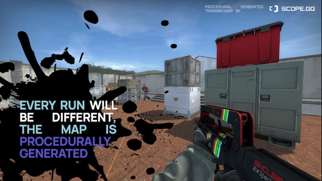
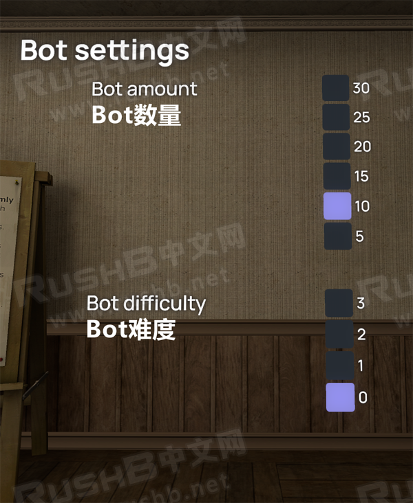
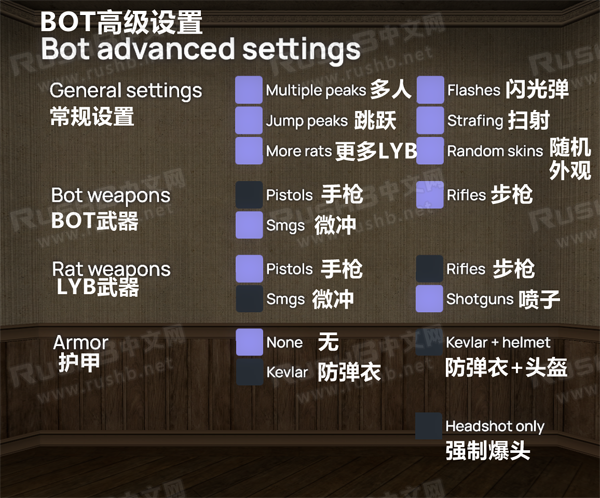
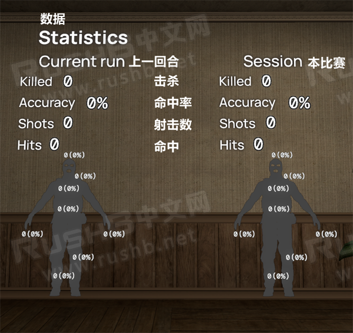
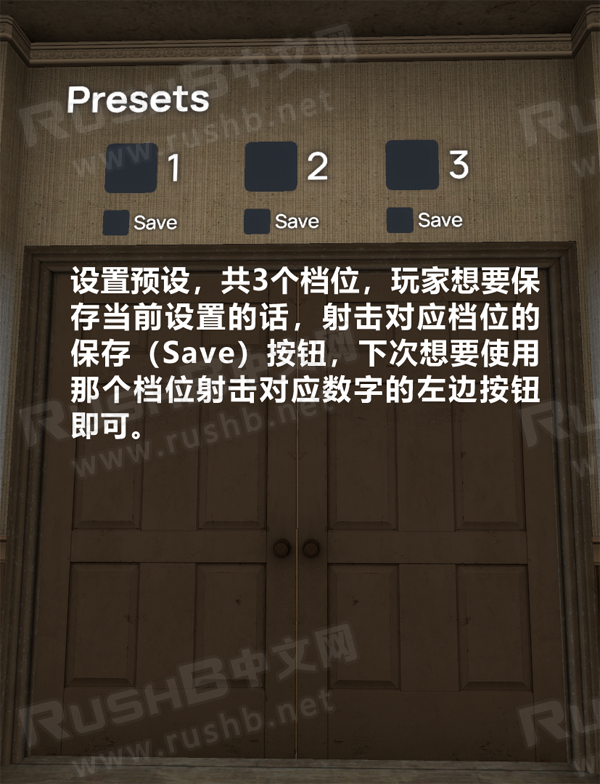
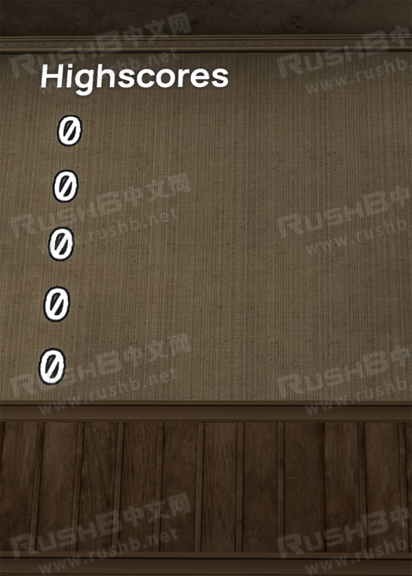
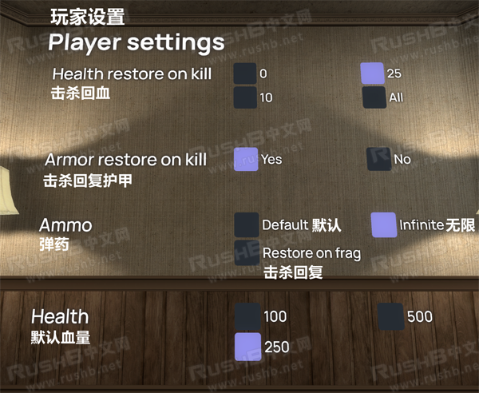
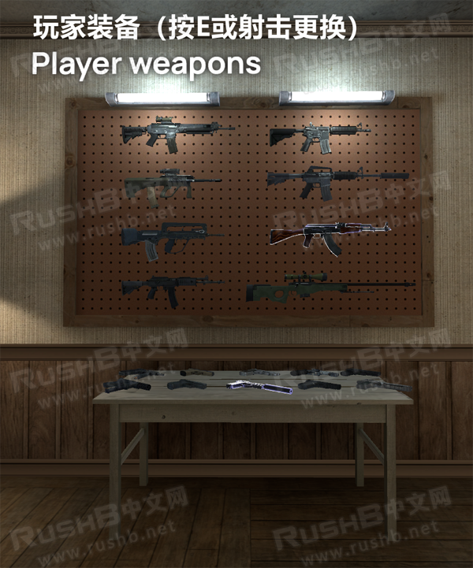

CSGO RushB中文网
CSGO RushB中文网
为大家介绍新的社区地图：Procedurally Generated Training Map，翻译过来是：程序生成训练地图。作者是Orel，之前本站也是介绍过他的另一张程序生成地图：
AIM ROGUE INFERNO。
这次的Procedurally Generated Training Map是一张单人训练地图，地图随机生成，每回合布局都不同，玩家需要仔细查看每个角落，清光敌人，走向胜利。

Procedurally Generated Training Map创意工坊地址：
https://steamcommunity.com/sharedfiles/filedetails/?id=2749351643
Procedurally Generated Training Map地图功能介绍：
从正门右边第一个面板起，首先是BOT设置，包括BOT数量和难度。

接着是BOT高级设置，包括BOT行为、武器、护甲和强制爆头，其中Multiple peaks应该是指同一位置会有多个敌人，Rat指老.阴.逼/LYB，不会主动出来，最后一个强制爆头只有命中BOT头部才会造成伤害。

数据面板，用于记录你的游戏数据，左边是最新一回合的数据，右边是当前比赛的统计数据。

设置预设，保存你在地图的设置。

积分榜，用于记录你的最高游戏记录。

玩家设置，包括血量、护甲、弹药等。

玩家装备，提供步枪和副武器选择。

当一切准备就绪后，就可以进入正面开始游戏。